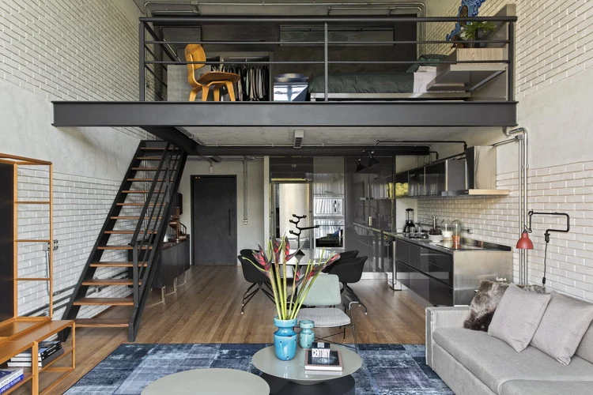
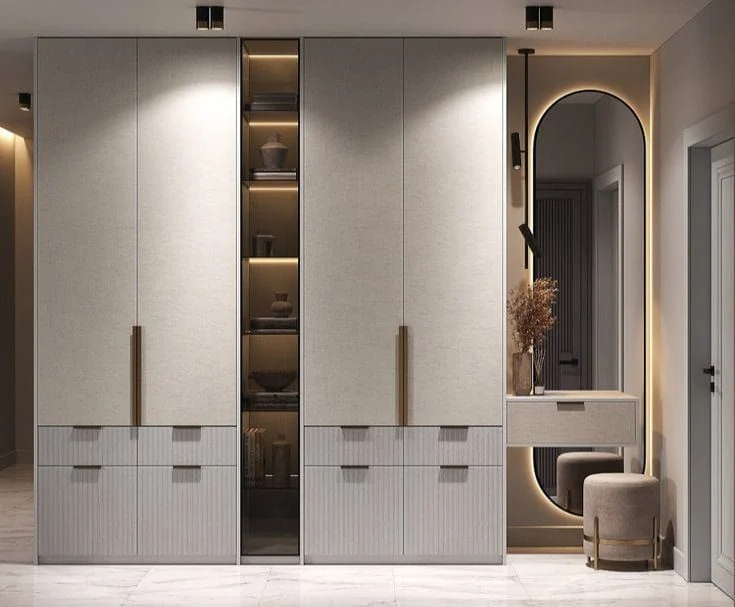

THE JOURNAL / PLANNING / 01
A clear brief for your new apartment
Start with the way your family lives
A good interior brief begins with your day, not a photograph. Think about where you keep your keys when you enter, where the school bags land, where you charge your phone and where you sit after dinner. These small details tell a designer what your home needs to do. A beautiful room becomes more useful when it supports the routines already important to your family.
Make one list for the people living in the home. Add visiting parents, regular guests and anyone who works from home. Mention different daily timings. A person leaving early for work may need access to clothes without disturbing someone sleeping nearby. A child attending an online class may need a quiet corner at a different time. These details can change the layout more than a preferred wall colour.
Separate essentials from preferences
Write three simple headings: needed now, good to have and possible later. Put essential storage, working kitchen requirements and furniture you already own in the first group. Put decorative wall finishes and optional display units in the second group unless they are especially important to you. The third group helps the design leave room for future work without including everything in the first quotation.
An item can move between groups after discussion. The purpose is to understand priorities, not to make a permanent decision before the designer visits. For example, a study table may be essential for one family and occasional for another. A large dining table may matter more than a television wall. Your brief should reflect your household rather than a standard package shown to every customer.
Bring useful measurements and existing information
Share the builder's plan if you have it, but say whether the home has already been handed over. An available plan is a starting point; final work needs measurements and checks at the actual property. List furniture and appliances you want to retain. Their model details and dimensions help prevent a design from depending on an assumed size. Mention any visible repair issues before discussing finishes.
Keep private documents separate from the design reference folder. The first discussion usually needs the general location, property type, rooms involved and your broad requirements. Share exact access details and sensitive documents only through the channel agreed with the studio. You do not need to send family photographs or unrelated identity documents just to explain the look you like.
Explain the budget and the date honestly
A budget discussion is useful even when you do not know the final figure. State whether the amount you have in mind includes appliances, loose furniture, curtains and other purchases. Two people can mention the same budget while expecting different work. Ask for the quotation to show its inclusions and exclusions clearly so that you can compare the proposal with your expectations.
Give the date by which you would like to move in, and explain whether it is flexible. Mention rent commitments, school dates or a planned family visit if they affect the decision. The studio should assess the programme after understanding the scope and site readiness. A preferred moving date should remain a planning input until the delivery schedule is agreed.
Your first discussion checklist
Before contacting the studio, keep a short room list, a few reference pictures and your main concerns ready. You can also note what you dislike about your present home. A brief saying “we need everyday storage near the entrance” is more useful than “make everything luxurious”. Clear requirements give the design team a better starting point and help you recognise whether the proposed solution fits your family.
Suggested article action: Tell GS INTERIOR STUDIO about your property, the rooms you want to improve and the stage your project has reached.
10 visual references
Recovered images from gsinteriorstudio.com. Used as inspiration; images repeat across articles and are not presented as verified project case studies.


